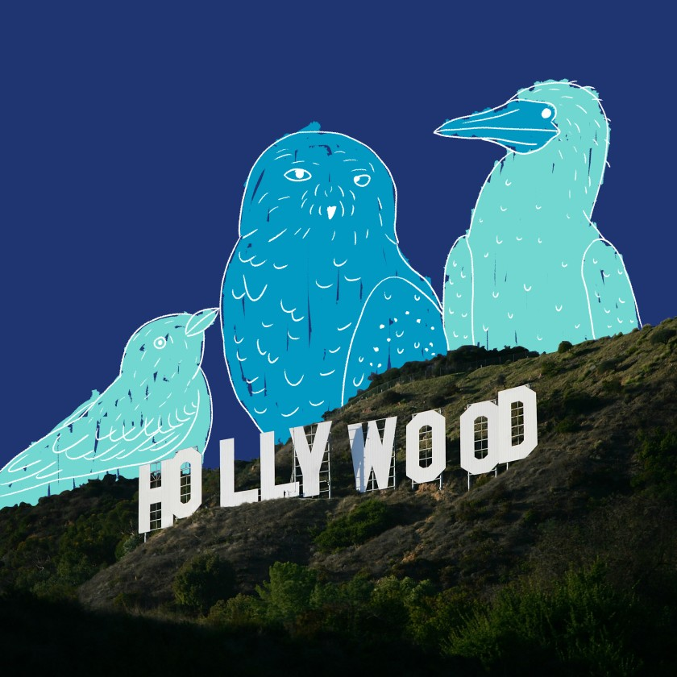

How to find the oddest birds in L.A.
But for the pandemic, I would be flying to New York City to see a snowy owl standing in a Central Park meadow. It’s the first time the Arctic tundra dweller has been seen in the park in130 years. “Wow! A magnificent snowy owl is in NYC! 🦉,” @Centralparknyc posted on IG.
The rare sighting took me back to 2013, when I persuaded my husband to ditch his birthday dinner in favor of careening over to Marina del Rey to see blue-footed boobies that had appeared offshore. We got there just before sunset. Avid birders had set up scopes and invited us to take a look. It was beyond thrilling to see these visitors from Ecuador’s Galápagos Islands.